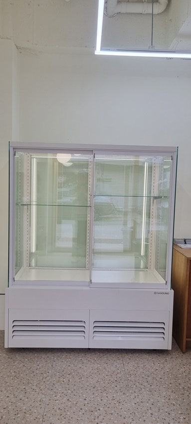
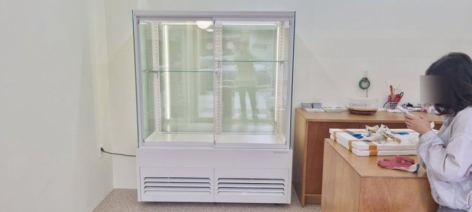
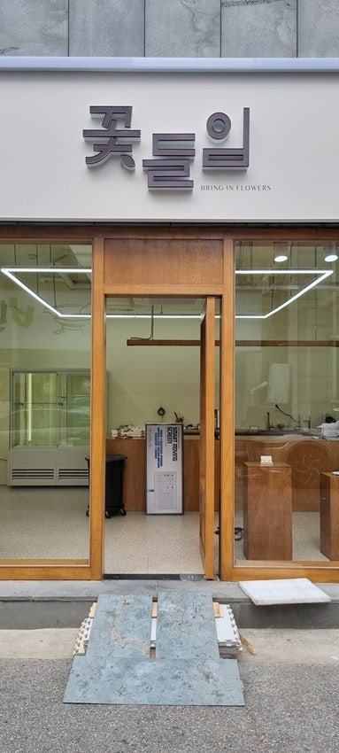
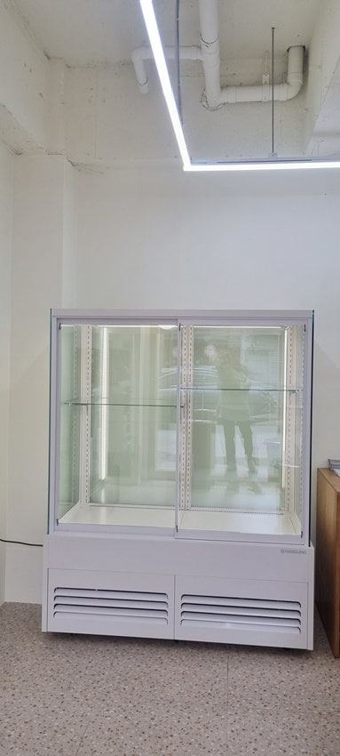
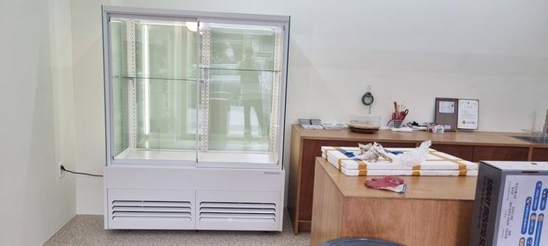
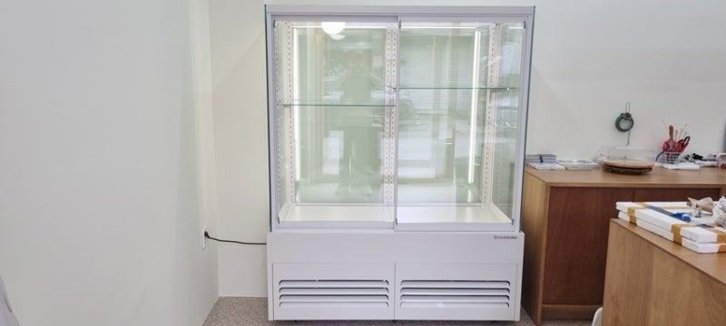
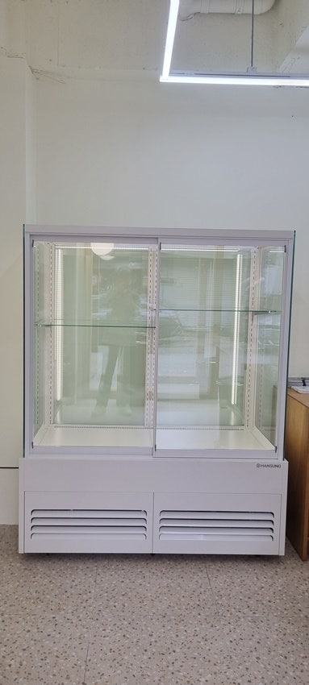
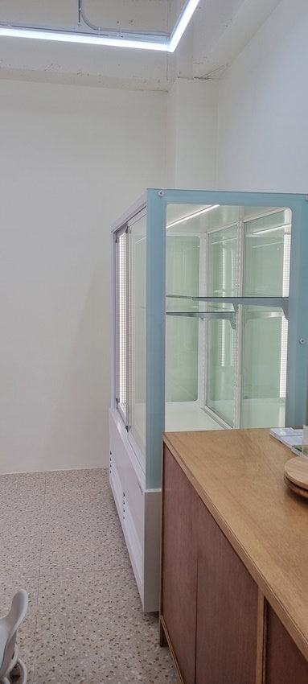
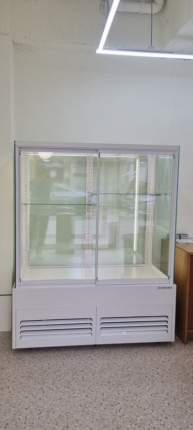
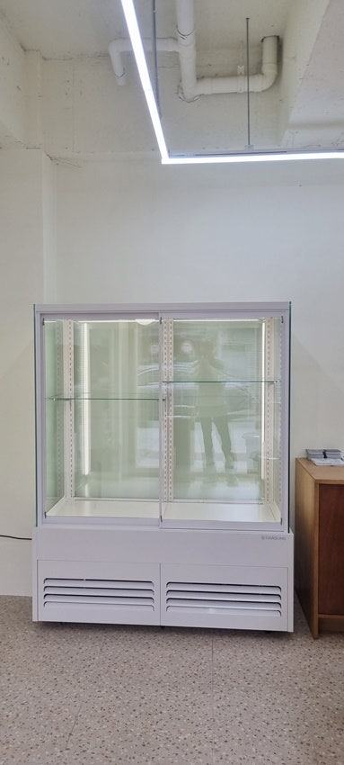

정육쇼케이스
정육쇼케이스 디자인, 고기 색과 매장 분위기를 함께 잡는 법

정육쇼케이스 디자인은 고기 색을 살리는 조명과 김서림 없는 유리, 부위별로 보기 좋은 진열 높이를 먼저 정하고, 그다음 외관 색과 마감을 매장 인테리어에 맞추는 순서가 좋습니다. 외관만 보고 정하면 영업을 시작한 뒤 고기 상태와 관리 면에서 아쉬움이 생기기 쉽습니다.
안녕하세요. 정육점과 정육식당의 진열장을 매장에 맞춰 설계하는 한성쇼케이스입니다.
정육점 인테리어를 준비하시다 보면 벽, 바닥, 간판은 일찍 정하면서 쇼케이스 디자인은 마지막에 급하게 고르시는 경우가 많습니다.
그런데 손님이 매장에 들어와 가장 오래 바라보는 곳은 결국 쇼케이스 안의 고기입니다.
정육쇼케이스는 매장 전면 분위기를 결정하는 동시에 고기 품질을 직접 좌우하는 설비입니다. 예쁜 외관만 보고 골랐다가 유리 김서림이나 조명 색 때문에 고기가 덜 신선해 보인다면 인테리어에 들인 노력이 아깝게 됩니다.
오늘은 정육쇼케이스 디자인을 정할 때 무엇부터, 어떤 순서로 보면 좋은지 정리해 드리겠습니다.
1. 조명 색이 고기 색을 정합니다
정육쇼케이스 디자인에서 가장 먼저 정하실 것은 조명입니다. 붉은 살코기와 흰 지방의 대비가 선명하게 보여야 손님이 신선하다고 느끼기 때문에, 많은 정육점이 핑크 계열 조명을 씁니다.
다만 조명 색이 너무 진하면 고기가 실제보다 붉어 보여 손님이 집에 가서 실망할 수 있습니다. 소고기, 돼지고기, 양념육처럼 주력 부위에 따라 어울리는 조명이 다르니, 판매할 부위 구성을 먼저 정하고 그에 맞춰 조명 색과 밝기를 고르세요.
- 주력 부위를 먼저 정하고 조명을 고르세요.
- 조명이 고기에 열을 주지 않는 위치인지 확인하세요.
2. 앞유리 형태와 김서림
앞유리는 곡선형과 직각형이 대표적입니다. 곡선형은 진열면이 넓어 보이고 고급스러운 느낌을 주며, 직각형은 깔끔하고 현대적인 분위기를 냅니다.
매장 인테리어 선과 맞춰 고르시면 됩니다.
형태보다 중요한 것은 유리가 늘 맑게 유지되느냐입니다. 유리에 김이 서리거나 내부에 성에가 차면 아무리 고급스럽게 꾸며도 매장이 덜 청결해 보입니다.
성에가 적고 온도 회복이 빠른 간접 냉각 방식을 함께 검토해 보세요.


3. 진열 높이와 단차
정육쇼케이스는 손님이 위에서 내려다보며 부위를 고르는 경우가 많아, 진열면 높이와 기울기가 디자인의 일부입니다.
진열면이 너무 낮으면 안쪽 고기가 잘 안 보이고, 너무 높으면 사장님이 뒤에서 고기를 꺼내고 채우기 불편해집니다.
부위별로 단차를 두면 같은 면적에서도 진열이 입체적으로 보입니다. 저울 받침대, 포장대 위치까지 함께 그려 보시면 손님 시선과 사장님 작업 동선을 모두 챙길 수 있습니다.
- 손님 눈높이에서 안쪽까지 보이는지 확인하세요.
- 저울·포장대 자리를 디자인에 포함하세요.
4. 외관 색과 마감은 마지막에
조명, 유리, 진열 높이가 정해지면 외관 색과 마감을 매장 인테리어에 맞춥니다. 모던 블랙은 고기 색을 더 진하게 돋보이게 하고, 스텐이나 화이트는 깔끔하고 위생적인 인상을 줍니다.
우드 마감은 정육식당처럼 따뜻한 분위기를 원하는 매장에 잘 어울립니다.
정육점은 물청소를 자주 하는 곳이라 하단 마감이 물기에 강한 소재인지도 꼭 확인하세요. 디자인이 아무리 좋아도 하단이 부식되면 금방 낡아 보입니다.
체크리스트
- 주력 부위에 맞는 조명 색
- 앞유리 형태(곡선·직각)
- 김서림·성에를 줄이는 냉각 방식
- 진열 높이와 부위별 단차
- 물청소에 강한 하단 마감
매장을 먼저 보고 설계한 맞춤 쇼케이스 사례
업종은 다르지만 디자인을 정하는 과정은 정육쇼케이스와 같아 소개해 드립니다. 새로 문을 연 플라워 숍에 납품한 냉장 쇼케이스로, 고객님은 처음에 중고를 알아보시다가 상담을 의뢰하셨습니다.
저희는 먼저 매장을 방문해 심플하고 세련된 인테리어를 확인한 뒤, 분위기를 해치지 않으면서 실용적인 구조로 설계했습니다.
크고 작은 상품을 자유롭게 진열할 수 있도록 좌우 선반 높이를 다르게 잡았고, 가로 1200mm 크기에 LED 조명을 더했습니다.
유리는 접합 부위가 거의 보이지 않는 UV 접합으로 마감해 투명도를 높였습니다. 진열 상품에 맞춘 선반 단차와 매장에 맞춘 마감을 먼저 정한다는 점은 정육쇼케이스 디자인에서도 그대로 적용됩니다.









자주 묻는 질문
정육쇼케이스 조명은 꼭 핑크색이어야 하나요?
꼭 그렇지는 않습니다. 주력 부위와 매장 분위기에 따라 다른 색도 쓰이며, 고기 색이 실제와 너무 다르게 보이지 않는 선에서 정하시는 것이 좋습니다.
외관 색상을 매장 인테리어에 맞춰 바꿀 수 있나요?
가능합니다. 외관 색과 마감, 앞유리 형태, 조명 색, 내부 단차까지 매장에 맞춰 맞춤 제작합니다.
디자인 상담 때 무엇을 준비하면 좋나요?
설치 자리 실측 치수, 인테리어 시안이나 매장 사진, 판매할 부위 구성을 알려 주시면 디자인 방향을 구체적으로 제안해 드릴 수 있습니다.
매장 조건에 맞춰 만드는 한성쇼케이스
원하시는 제품 사진과 설치할 공간 사진만 보내 주셔도 매장에 맞는 구성을 추천해 드립니다.
- 전국 240여 개 A/S 전담 센터 운영
- 본사 대량 자재 매입으로 품질 대비 합리적인 가격
- 유럽제·삼성 냉각 콤프레셔 적용
- 국내 최초 쇼케이스 전문 디자이너 상주
매장 폭과 원하는 진열 구성을 알려 주세요. 실측과 견적을 안내해 드립니다.
031-986-2458